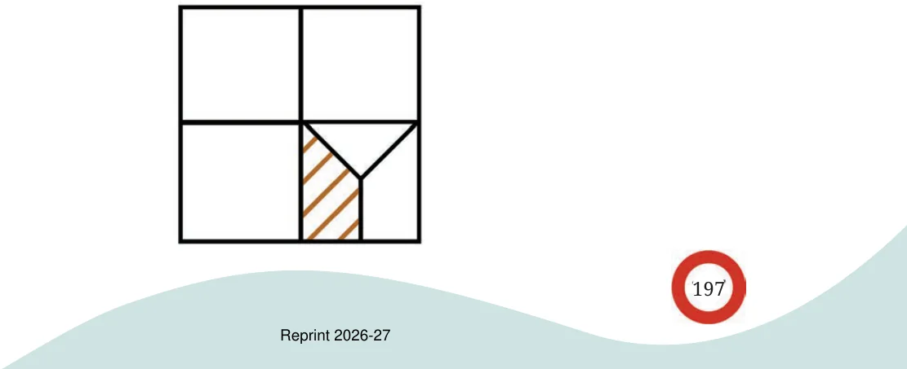
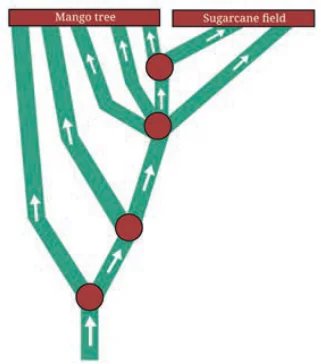

- 1.Evaluate the following:
\(3 \div \frac{7}{9} \frac{14}{4} \div 2 \frac{2}{3} \div 23 \frac{14}{6} \div 73\)
\(\frac{4}{3} \div 34 \frac{7}{4} \div 17 \frac{8}{2} \div 415\)
\(\frac{1}{5} \div 19 \frac{1}{6} \div 1112 3 \frac{2}{3} \div 1 38\)
- 2.For each of the questions below, choose the expression that
describes the solution. Then simplify it.
- (a)Maria bought 8 m of lace to decorate the bags she made for
school. She used \(\frac{1}{4} m\) for each bag and finished the lace. How many bags did she decorate?
- (i)\(8 \times \frac{1}{4}\) (ii) \(\frac{1}{8} \times 14\)
- (iii)\(8 \div \frac{1}{4}\) (iv) \(\frac{1}{4} \div 8\)
- (b)\(\frac{1}{2}\) meter of ribbon is used to make 8 badges. What is the
length of the ribbon used for each badge?
- (i)\(8 \times \frac{1}{2}\) (ii) \(\frac{1}{2} \div 18\)
- (iii)\(8 \div \frac{1}{2}\) (iv) \(\frac{1}{2} \div 8\)
- (c)A baker needs \(\frac{1}{6}\) kg of flour to make one loaf of bread. He has
5 kg of flour. How many loaves of bread can he make?
\(5 \times \frac{1}{6} \frac{1}{6} \div 5 5 \div \frac{1}{6} 5 \times 6\)
- 3.If \(\frac{1}{4}\) kg of flour is used to make 12 rotis, how much flour is used to
make 6 rotis?
- 4.Pāṭīgaṇita, a book written by Sridharacharya in the 9th century
CE, mentions this problem: “Friend, after thinking, what sum will \(1 \div\) be obtained by adding together \(1 \div \frac{1}{2}\) ”. What should the friend say? \(\frac{1}{6}\) , \(1 \div 110\) , \(1 \div 113\) , \(1 \div 19\) , and
- 5.Mira is reading a novel that has 400 pages. She read \(\frac{1}{5}\) of the pages
yesterday and \(\frac{3}{10}\) of the pages today. How many more pages does she need to read to finish the novel?
- 6.litres of petrol? A car runs 16 km using 1 litre of petrol. How far will it go using \(2 \frac{3}{4}\)
- 7.Amritpal decides on a destination for his vacation. If he takes a
train, it will take him \(5 \frac{1}{6}\) hours to get there. If he takes a plane, it will take him \(\frac{1}{2}\) hour. How many hours does the plane save?
- 8.Mariam’s grandmother baked a cake. Mariam and her cousins
finished \(\frac{4}{5}\) of the cake. The remaining cake was shared equally by Mariam’s three friends. How much of the cake did each friend get?
- 9.Choose the option(s) describing the product of ( \(\frac{565}{465} \times 707676)\):
- (a)\(> \frac{565}{465}\) (b) \(< \frac{565}{465}\)
- (c)\(> \frac{707}{676}\) (d) \(< \frac{707}{676}\)
- (e)\(> 1\) (f) \(< 1\)
- 10.What fraction of the whole square is shaded?


- 11.A colony of ants set out in search of food.
As they search, they keep splitting equally at each point (as shown in the Fig. 8.7) and reach two food sources, one near a mango tree and another near a sugarcane field. What fraction of the original group reached each food source?
- 12.What is \(1 - \frac{1}{2}\) ?
( (
\((1 - 1 \frac{2)}{2}\) ) \(\times (1 - 1 \frac{3)}{3}\) ) \(\times (1 - 14) \times (1 - 15)\) ?
\(1 - 1 \times 1 - 1\) ? Fig. 8.7
\((1 - 12) \times (1 - 13) \times (1 - 14) \times (1 - 15) \times (1 - 16) \times (1 - 17) \times (1 - 18) \times (1 - 19) \times (1 - 110)\) ? Make a general statement and explain.